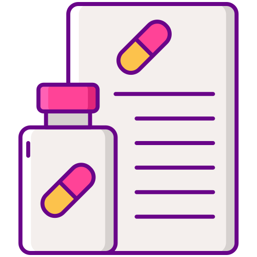
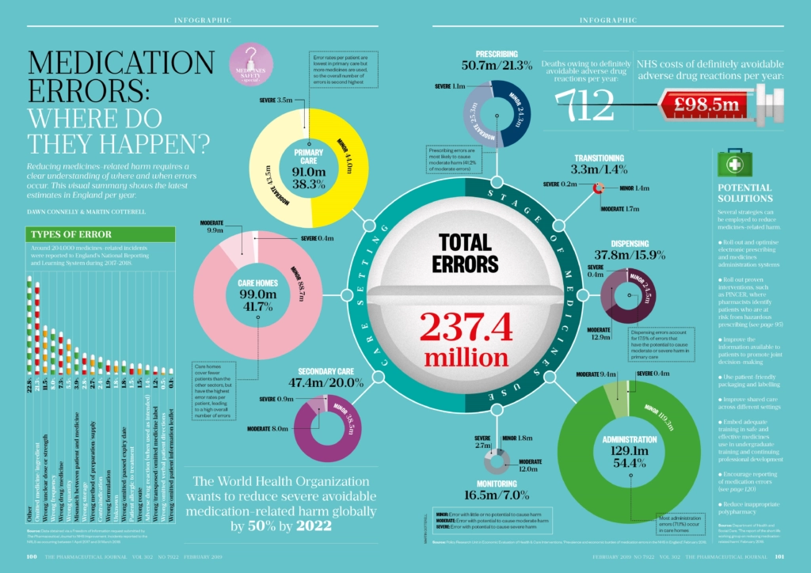

 Meds on Deck: Empowering Patient Health through Drug Information
YOUR PARTNER IN PREVENTING PATIENT
MEDICATION ERRORS
About Meds on Deck
At Meds on Deck, we tackle a critical issue: medication dispensing errors in healthcare. These errors have far-reaching consequences for patients and the entire healthcare system. Consider this: each year in the United States, 7,000 to 9,000 lives are lost due to medication errors. These tragedies result in significant financial costs and immense patient suffering.
But it doesn’t stop there. Medication errors also reduce patient trust in the healthcare system. They leave lasting impacts on both the physical and psychological well-being. That’s where Meds on Deck steps in.
Our mission? To provide a user-friendly platform that empowers patients. We want you to accurately identify your medications and access comprehensive drug information. Because when it comes to your health, precision matters. Welcome to Meds on Deck—where knowledge meets patient care.
Data on Medication Dispensing Errors in Healthcare

Fig.1 Strategies to address medication errors and promote patient safety
Medication errors statistics by drug type
Two million Americans misused prescription pain relievers in 2017 (National Institute on Drug Abuse, 2017).
Intravenous medication administration error has a median medication error rate of 48%-53% (Patient Safety Network, 2018).
As many as 18 million people aged 12 or older may misuse prescription psychotherapeutic drugs every year (NSDUH Data Review, 2015).
As many as 30% of the medication errors that are reported to the U.S. Poison Control Centers involve pediatric patients (U.S. Pharmacist, 2019).
35%-45% of medication errors involve patients with diabetes (U.S. Poison Control Centers, 2019).
The Impact of Patient Medication Errors
1. Patient Safety and Health Outcomes
Medication errors can greatly impact patient safety and health outcomes. When patients receive incorrect medications or incorrect doses, it can lead to adverse side-effects, exacerbation of existing conditions, or life-threatening situations.
For example
Overdosing: Administering too much of a medication can cause toxicity, organ damage, or severe side effects.
Underdosing: Insufficient medication may fail to manage the condition effectively, leading to disease progression.
2. Impact on Elderly Patients
The elderly face unique challenges including
Polypharmacy: Elderly patients often take multiple medications, increasing the risk of errors.
Cognitive Decline: Age-related cognitive decline may affect adherence and understanding of medication instructions.
3. Increased Healthcare Costs
Errors can result in complications, necessitating hospital readmissions, which strain healthcare resources. In addition, treating side-effects due to medical errors adds to healthcare expenses.
Legal and Ethical Implications
Medication errors can lead to legal and ethical challenges including, malpractice lawsuits filed against healthcare providers, as well as the potential to tarnish the reputation of healthcare professionals and institutions.
4. Psychological Impact
Patients and their families experience emotional distress due to medication errors. This may lead to feelings of anxiety and fear or mistrust in the healthcare system and leave Healthcare providers feeling a sense of guilt or responsibility for patient harm.